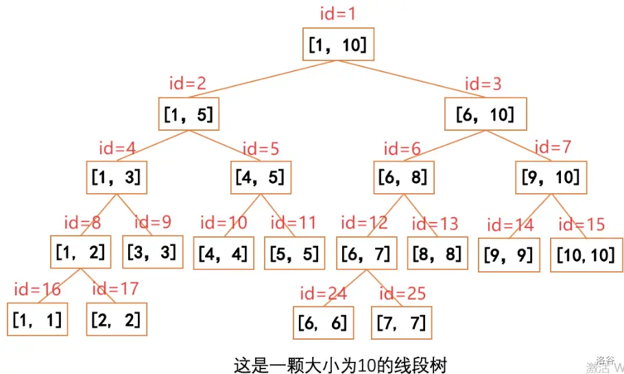

线段树
引入¶
线段树是算法竞赛中常用的维护区间信息的数据结构，可以在 \(O(\log n)\) 的时间复杂度内实现单点修改、区间修改、区间查询（区间求和、求区间最大值、求区间最小值等）操作。
线段树就是分块思想的树化，或者说是对于信息处理的二进制化——用于达到 \(O(\log n)\) 级别的处理速度，以 2 为底的对数。（其实以几为底都只是个常数，可以忽略）。而分块的思想，则是可以用一句话总结为：通过将整个序列划分为若干个小块，对于要查询的一段区间，总是可以整合成 k 个所分块与 m 个单个元素的信息的并。但普通的分块不能高效率地解决很多问题，所以作为 log 级别的数据结构，线段树应运而生。
基本结构与操作¶
区间信息¶
线段树维护的是可合并的区间信息：两个小区间的信息能在 \(O(1)\) 时间内合并成大区间的信息。
| 信息 | 合并方式 |
|---|---|
| 区间和 | t[id]=t[lc(id)]+t[rc(id)] |
| 区间最大值 / 最小值 | t[id]=max(t[lc(id)],t[rc(id)]) |
| 区间 gcd / 异或 / 按位与或 | 同理 |
也就是说：只需修改「叶子怎么填」与「怎么合并」，同一副骨架就能维护不同信息。
递归建树与存储方式¶

对于一个节点，如果它维护的区间 \([L,R]\) 满足 \(L\ne R\)，那么它一定会有两个儿子节点（我们将其称作左儿子和右儿子）。
如果这个点的编号为 \(id\)，那么它的左儿子编号为 \(id\times2\)，右儿子编号为 \(id\times2+1\)。
它的左儿子维护的区间为：
它的右儿子维护的区间为：
知道这些基础概念之后，我们就可以尝试实现一棵线段树了。
int lc(int x){return x<<1;} // 左儿子所在 ID
int rc(int x){return x<<1|1;} // 右儿子所在 ID
void build(int id,int l,int r){ // 建树 id:所在位置 l,r为范围左右端点
if(l==r){
t[id]=a[l]; // 叶子：直接存数组值
return;
}
int mid=(l+r)>>1;
build(lc(id),l,mid); // 建左子树
build(rc(id),mid+1,r); // 建右子树
t[id]=t[lc(id)]+t[rc(id)]; // 合并：父 = 左 + 右
}
注意：线段树需要开 \(4n\) 的空间
为什么要开 4 倍空间？
主要讨论一种每次将区间 \([l,r]\) 分成 \([l,m]\) 和 \([m+1,r]\) 的线段树，其中 \(m=\left\lfloor\frac{l+r}{2}\right\rfloor\)。
设一棵大小为 \(n\) 的线段树，高度为 \(h(n)\)，最大节点编号为 \(f(n)\)。
易得 \(h(n)=\left\lceil\log_2 n\right\rceil\)。
设 \(f(n)\) 为 \(n\) 的线段树中，最大节点编号。
易得 \(f(n)=2^{\lceil\log_2 n\rceil}-1\)。
我们需要找到大小为 \(n\) 的线段树所用到的最大编号。显然，使这个编号 \(2^k\) 进制下的位数最大，容易知道这个最大位数为 \(h(n)+1\)。
我们考虑从根节点走到编号最大的节点。假设当前节点编号为 \(x\)，区间为 \([l,r]\)。
若当前区间长度为偶数，则显然会走到右子树，即 \([m+1,r]\)。
若当前区间长度为奇数：
- 若右子树高度相同，则走到右子树，否则走到左子树。
- 高度相同，即： $$ h\left(\left\lfloor\frac{r-l+1}{2}\right\rfloor\right) = h\left(\left\lceil\frac{r-l+1}{2}\right\rceil\right) $$ 即： $$ \left\lceil\log_2\left\lfloor\frac{r-l+1}{2}\right\rfloor\right\rceil = \left\lceil\log_2\left\lceil\frac{r-l+1}{2}\right\rceil\right\rceil $$ 因为 \(r-l+1\) 为奇数，所以两边相差不超过 \(1\)。当区间长度为 \(2^k+1\) 时，左子树高度为 \(k\)，右子树高度为 \(k+1\)。
若 \(r-l+1\) 为正整数次幂，则易得 \(m-l\) 也为 \(2\) 的非负整数次幂。也就是说，若一次走了左子树，则以后都要走左子树，直到最后 \(r-l=1\) 时再走一次右子树。
不考虑 \(n=1\) 的情况。
易得 \(f(n)=2^{h(n)}-1\)，必然满足 \(1\le n\le 2^{h(n)}\)。
考虑一下 \(n\) 的二进制，可得 \(h(n)\) 的数量为 \(n\) 进制下最高的 \(1\) 次高的 \(1\) 之间的距离 \(d(n)\)（当 \(n\) 为 \(2\) 的整数次幂时 \(d(n)=0\)）。则相应的最大值为 \(h(n)-d(n)-1\)。有：
当 \(n=2^k\)，则 \(f(n)=2^k-1=2n-1\)。
若 \(n=2^k+r\)（\(0<r<2^k\)），则 \(f(n)=2^{k+1}-2^{d(n)+1}-1\)。要使 \(\frac{f(n)}n\) 取最大值，即 \(f(n)\) 尽量大，\(n\) 尽量小。对于确定的 \(d(n)=a\)（\(0\le a<k\)），\(f(n)=2^{k+2}-2^{a+1}-1\)，\(n=2^k+2^a\)。
当 \(a\) 取到 \(\left\lfloor\frac{k}{2}\right\rfloor\) 时，
而
于是需要开四倍空间。
本证明参考自 洛谷。
单点修改与查询¶
void add(int l,int k,int L,int R,int id){ //k为要加的值
if(L==R){
t[id]+=k;
return;
}
int mid=L+(R-L)/2;
if(l<=mid) add(l,k,L,mid,lc(id)); //修改点 l∈[L,mid]（在左儿子区间内）
else add(l,k,mid+1,R,rc(id)); //否则修改点 l∈[mid+1,R]（在右儿子区间内）
t[id]=t[lc(id)]+t[rc(id)]; //更新自己
return;
}
区间查询¶
int query(int l,int r,int L,int R,int id){ //区间查询
if(l<=L&&r>=R) return t[id];
//如果当前节点区间 [L,R]⊆[l,r]（完全被查询区间包含），直接返回
int mid=L+(R-L)/2,ans=0;
if(l<=mid) ans+=query(l,r,L,mid,lc(id));
//如果查询区间与左儿子区间 [L,mid] 满足 [l,r]∩[L,mid]≠∅（有交集），递归左儿子并累加答案
if(r>mid) ans+=query(l,r,mid+1,R,rc(id));
//如果查询区间与右儿子区间 [mid+1,R] 满足 [l,r]∩[mid+1,R]≠∅（有交集），递归右儿子并累加答案
return ans;
//返回答案
}
这样 P3374 就好了。
区间修改（lazy 标记）¶
「给区间 \([l,r]\) 全体加 \(k\)」如果拆成一个个叶子单点修改，一次要 \(O(长度)\)，\(m\) 次操作 \(O(nm)\) 必超时。lazy 的核心一句话：整段被完全覆盖时先欠着账，要用到儿子了再还。
- 完全覆盖时只改自己：
t[id]+=k*(R-L+1)，tag[id]+=k，不再往下走 tag[id]的含义是「子树里每个叶子都欠了 +tag[id]」——它是单位欠账，不是总和（所以下传时整个传给儿子，值才乘长度）- 某次操作/查询需要进入儿子前，先
pushdown：账传给两个儿子（+=，因为儿子可能本来就欠着旧账），自己的tag[id]=0清零
易错（P3372 六连坑）
- build 签名
(id,l,r)与调用build(1,1,n)要配套，别混搭成build(1,n,1) - build 忘合并
t[id]=t[lc(id)]+t[rc(id)]→ 内部节点全 0 - pushdown 不改自己的 t（完全覆盖时已经加过了，再动就是重复加账）
- pushdown 必须
tag[id]=0，否则账永远不清，儿子被反复加 - add/query 的
mid=L+(R-L)/2用节点区间 L,R，不是查询区间 l,r；递归要有l<=mid/r>mid边界 - query 先判不相交
r<L||R<l，再判包含
为什么查询也要 pushdown？
懒标记记在祖先身上。若查询只覆盖某个节点的左半边、右半边的账还欠在祖先没发下去，
递归进儿子时读到的就是旧值。所以凡是要「进入儿子」的操作（区间加、区间查询、
混用的单点修改）都必须先 pushdown。
完整实现见例题 P3372。
例题¶
P3372 【模板】线段树 1¶
题意
长度 \(n\) 的数列，\(m\) 次操作：
1 l r k：\(a[l..r]\) 每个数加 \(k\)；2 l r：输出 \(a[l..r]\) 的和。
\(n,m \le 10^5\)，值可能超过 int，开 long long。
参考代码
/*
Question: 线段树1
Source: P3372
Difficulty: Green
Date: 2026/11/13
做法：线段树 lazy 标记（区间加 + 区间和）
*/
#include<bits/stdc++.h>
using namespace std;
#define int long long
const int MAXN=100010;
int n,m;
int a[MAXN],t[MAXN<<2],tag[MAXN<<2];
int lc(int x){return x<<1;}
int rc(int x){return x<<1|1;}
void pushdown(int l,int r,int id){
if(!tag[id]) return;
int mid=l+(r-l)/2;
tag[lc(id)]+=tag[id];
t[lc(id)]+=tag[id]*(mid-l+1);
tag[rc(id)]+=tag[id];
t[rc(id)]+=tag[id]*(r-mid);
tag[id]=0;
return;
}
void build(int l,int r,int id){
if(l==r){
t[id]=a[l];
return;
}
int mid=l+(r-l)/2;
build(l,mid,lc(id));
build(mid+1,r,rc(id));
t[id]=t[lc(id)]+t[rc(id)];
return;
}
void add(int l,int r,int k,int L,int R,int id){
if(l<=L&&R<=r){ // 完全覆盖：只改自己，记欠账
t[id]+=k*(R-L+1);
tag[id]+=k;
return;
}
pushdown(L,R,id);
int mid=L+(R-L)/2;
if(l<=mid) add(l,r,k,L,mid,lc(id));
if(r>mid) add(l,r,k,mid+1,R,rc(id));
t[id]=t[lc(id)]+t[rc(id)];
return;
}
int query(int l,int r,int L,int R,int id){
if(r<L||R<l) return 0;
if(l<=L&&R<=r) return t[id];
pushdown(L,R,id); // 查询也必须 pushdown！
int mid=L+(R-L)/2;
int ans=0;
ans+=(query(l,r,L,mid,lc(id))+query(l,r,mid+1,R,rc(id)));
return ans;
}
signed main(){
ios::sync_with_stdio(false);
cin.tie(nullptr);
cin>>n>>m;
for(int i=1;i<=n;i++) cin>>a[i];
build(1,n,1);
while(m--){
int op;
cin>>op;
if(op==1){
int x,y,k;
cin>>x>>y>>k;
add(x,y,k,1,n,1);
}
else{
int x,y;
cin>>x>>y;
cout<<query(x,y,1,n,1)<<endl;
}
}
return 0;
}
P3374 【模板】树状数组 1¶
题意
已知一个数列，你需要进行下面两种操作：
-
将某一个数加上 \(x\)；
-
求出某区间每一个数的和。
参考代码
/*
Question: 树状数组1
Source: Luogu P3374
Difficulty: Green
Date: 2026/11/7
*/
#include<bits/stdc++.h>
using namespace std;
#define int long long
const int N=500010;
int n,m;
int a[N],t[N<<2];
int lc(int x){return x<<1;} // 左儿子所在 ID
int rc(int x){return x<<1|1;} // 右儿子所在 ID
void build(int id,int l,int r){ // 建树 id:所在位置 l,r为范围左右端点
if(l==r){
t[id]=a[l]; // 叶子：直接存数组值
return;
}
int mid=l+(r-l)/2;
build(lc(id),l,mid); // 建左子树
build(rc(id),mid+1,r); // 建右子树
t[id]=t[lc(id)]+t[rc(id)]; // 合并：父 = 左 + 右
}
int query(int l,int r,int L,int R,int id){ //区间查询 l,r为查询区间的左右端点你想查 [l,r] 的和）L,R为当前结点管辖区间的左右端点 id为当前编号
if(l<=L&&r>=R) return t[id];
//如果当前节点区间 [L,R]⊆[l,r]（完全被查询区间包含），直接返回
int mid=L+(R-L)/2,ans=0;
if(l<=mid) ans+=query(l,r,L,mid,lc(id));
//如果查询区间与左儿子区间 [L,mid] 满足 [l,r]∩[L,mid]≠∅（有交集），递归左儿子并累加答案
if(r>mid) ans+=query(l,r,mid+1,R,rc(id));
//如果查询区间与右儿子区间 [mid+1,R] 满足 [l,r]∩[mid+1,R]≠∅（有交集），递归右儿子并累加答案
return ans;
//返回答案
}
void add(int l,int k,int L,int R,int id){ //k为要加的值 l为要修改的位置（把 a[l] 加上 k）L,R为当前结点管辖区间 id为当前编号
if(L==R){
t[id]+=k;
return;
}
int mid=L+(R-L)/2;
if(l<=mid) add(l,k,L,mid,lc(id)); //修改点 l∈[L,mid]（在左儿子区间内）
else add(l,k,mid+1,R,rc(id)); //否则修改点 l∈[mid+1,R]（在右儿子区间内）
t[id]=t[lc(id)]+t[rc(id)]; //更新自己
return;
}
signed main(){
ios::sync_with_stdio(false);
cin.tie(nullptr);
cin>>n>>m;
for(int i=1;i<=n;i++) cin>>a[i];
build(1,1,n);
while(m--){
int op;
cin>>op;
if(op==1){
int x,k;
cin>>x>>k;
add(x,k,1,n,1);
}
else if(op==2){
int x,y;
cin>>x>>y;
cout<<query(x,y,1,n,1)<<endl;
}
}
return 0;
}
P1198 [JSOI2008] 最大数¶
题意
维护一个初始为空的数列，两种操作：
Q L：输出末尾 \(L\) 个数中的最大值（\(L>0\) 且不超过当前长度）；A n：把 \((n+t)\bmod D\) 插入末尾，其中 \(t\) 是上一次查询的答案（没查过则 \(t=0\)）。
保证 \(1\le M\le 2\times 10^5\)，\(1\le D\le 2\times 10^9\)，\(n\) 可能为负数。
和 P3374 的不同处：
- 求和 → 最大值：叶子
t[id]=k（赋值）、合并t[id]=max(t[lc(id)],t[rc(id)])、查询初值LLONG_MIN - 动态插入：空位设 \(-\infty\) 不参与比较，插入 = 单点赋值，不要每次查询都重建（会 TLE）
- 负数取模：
int x=(input%d+t1)%d; if(x<0) x+=d;
参考代码
/*
Question: [JSOI2008] 最大数 (线段树维护区间最大值）
Source: P1198
Difficulty: Green
Date: 2026/11/13
做法：线段树
*/
#include<bits/stdc++.h>
using namespace std;
#define int long long
const int M=200010;
int m,d,t1=0,cnt=0;
int t[M<<2]; // 4 倍空间
int lc(int x){return x<<1;}
int rc(int x){return x<<1|1;}
void add(int l,int k,int L,int R,int id){ // 把位置 l 的值改成 k（单点赋值）
if(L==R){
t[id]=k;
return;
}
int mid=L+(R-L)/2;
if(l<=mid) add(l,k,L,mid,lc(id));
else add(l,k,mid+1,R,rc(id));
t[id]=max(t[lc(id)],t[rc(id)]); // 合并：取较大
return;
}
int query(int l,int r,int L,int R,int id){ // 查询 [l,r] 的最大值
if(l<=L&&R<=r) return t[id];
int mid=L+(R-L)/2;
int ans=LLONG_MIN;
if(l<=mid) ans=max(query(l,r,L,mid,lc(id)),ans);
if(r>mid) ans=max(query(l,r,mid+1,R,rc(id)),ans);
return ans;
}
signed main(){
ios::sync_with_stdio(false);
cin.tie(nullptr);
cin>>m>>d;
for(int i=1;i<M*4;i++) t[i]=LLONG_MIN; // 空位=负无穷，不参与比较
while(m--){
string op;
int input;
cin>>op>>input;
if(op=="A"){
int x=(input%d+t1)%d; // 防负数取模
if(x<0) x+=d;
cnt++;
add(cnt,x,1,M,1); // 插入 = 单点赋值
}
else if(op=="Q"){
t1=query(cnt+1-input,cnt,1,M,1); // 末尾 input 个数
cout<<t1<<endl;
}
}
return 0;
}
P1816 忠诚¶
题意
老管家有 \(m\) 笔账目（\(1\le m\le 10^5\)）和 \(n\) 个问题（\(1\le n\le 10^5\)），第 \(i\) 笔账目金额为 \(x_i\)（\(0\le x_i\le 10^5\)）。每次询问 \([a,b]\)：第 \(a\) 到第 \(b\) 笔账中最少的一笔是多少。
输出格式特殊：所有答案输出在同一行，每个答案中间以一个空格分隔。
和 P3374 的不同处：
- 求和 → 最小值：合并
t[id]=min(t[lc(id)],t[rc(id)])、查询初值LLONG_MAX（求 min 用 \(+\infty\) 起步） - 没有修改操作：不用写 add
- 输出一行、空格分隔：
cout<<query(...)<<" ";
参考代码
#include<bits/stdc++.h>
using namespace std;
#define int long long
const int M=100010;
int m,n;
int x[M],t[M<<2];
int lc(int x){return x<<1;}
int rc(int x){return x<<1|1;}
void build(int id,int l,int r){
if(l==r){
t[id]=x[l];
return;
}
int mid=l+(r-l)/2;
build(lc(id),l,mid);
build(rc(id),mid+1,r);
t[id]=min(t[lc(id)],t[rc(id)]);
}
int query(int l,int r,int L,int R,int id){
if(l<=L&&r>=R) return t[id];
int mid=L+(R-L)/2;
int ans=LLONG_MAX;
if(l<=mid) ans=min(query(l,r,L,mid,lc(id)),ans);
if(r>mid) ans=min(query(l,r,mid+1,R,rc(id)),ans);
return ans;
}
signed main(){
ios::sync_with_stdio(false);
cin.tie(nullptr);
cin>>m>>n;
for(int i=1;i<=m;i++) cin>>x[i];
build(1,1,m);
while(n--){
int a,b;
cin>>a>>b;
cout<<query(a,b,1,m,1)<<" ";
}
cout<<endl;
return 0;
}
P4588 [TJOI2018] 数学计算¶
题意
初始 \(x=1\)，\(Q\) 次操作：
1 m：\(x \leftarrow x \times m\)，输出 \(x \bmod M\)；2 pos：\(x\) 除以第 \(pos\) 次操作所乘的数（保证该次是类型 1，且每个类型 1 至多被除一次），输出 \(x \bmod M\)。
\(Q \le 10^5\)，\(t \le 5\)，\(1 < M \le 10^9\)。
和模板的不同处：
- 不能直接模拟除法：模意义下没有除法（\(M\) 不保证质数），真实值会溢出——所以不存结果，存因子
- 第 \(i\) 次
1 m→ 位置 \(i\) 放因子 \(m\)；2 pos→ 位置 \(pos\) 改回 1；答案 = 全局乘积 = 根节点a[1] - 乘积的单位元是 1（build 初始全 1，不是 0）
- 叶子赋值也要取模（
k%m）：\(Q=1\) 时没有合并，只在合并处取模会漏
易错：build 左儿子是 (l,mid)，不是 (1,mid)
左儿子写成 build(lc(id),1,mid) 会让每次递归都「重新从 1 建一棵前缀树」，
节点数从 \(O(n)\) 膨胀到 \(O(n\log n)\)：\(n\) 小时恰好不炸（骗过样例），
\(n\) 稍大就数组越界 RE。2026/11/22 复刷踩中，已进错题本。
参考代码
/*
Question: [TJOI2018] 数学计算
Source: P4588
Difficulty: Green
Date: 2026/11/21
做法：线段树（区间乘积 + 单点赋值）
*/
#include<bits/stdc++.h>
using namespace std;
#define int long long
const int N=100010;
int t,q,m;
int a[N<<2];
int lc(int id){return id<<1;}
int rc(int id){return id<<1|1;}
void build(int id,int l,int r){ // 初始全 1：乘法的单位元（不是 0！）
a[id]=1;
if(l==r) return;
int mid=l+(r-l)/2;
build(lc(id),l,mid);
build(rc(id),mid+1,r);
}
void modify(int p,int k,int L,int R,int id){ // 把位置 p 的值改成 k
if(L==R){
a[id]=k%m; // 叶子也要取模！（q=1 时没有合并，不取模会漏）
return;
}
int mid=L+(R-L)/2;
if(p<=mid) modify(p,k,L,mid,lc(id));
else modify(p,k,mid+1,R,rc(id));
a[id]=a[lc(id)]*a[rc(id)]%m; // 合并：乘积取模
}
signed main(){
ios::sync_with_stdio(false);
cin.tie(nullptr);
cin>>t;
while(t--){
cin>>q>>m;
build(1,1,q);
for(int i=1;i<=q;i++){
int op,x;
cin>>op>>x;
if(op==1) modify(i,x,1,q,1); // 第 i 次操作的位置放乘数 x
else modify(x,1,1,q,1); // 撤销：位置 x 改回 1
cout<<a[1]<<endl; // 根 = 全局乘积 mod M
}
}
return 0;
}
P2184 贪婪大陆¶
题意
长度 \(n\) 的区间，\(m\) 次操作：
1 l r：埋一种新的地雷，覆盖 \([l,r]\)；2 L R：查询与 \([L,R]\) 相交的不同地雷种数。
\(n,m \le 10^5\)。所有操作在线进行，没有撤销。
关键思路：
- 一种雷 \([l,r]\) 与查询区间 \([L,R]\) 相交，当且仅当 \(l \le R\) 且 \(r \ge L\)
- 因此答案 = （左端点 \(\le R\) 的雷数）\(-\)（右端点 \(< L\) 的雷数）
- 用两棵线段树分别计数：
tl在位置 \(l\) 单点 +1（左端点），tr在位置 \(r\) 单点 +1（右端点） - 查询 =
tl的前缀和 \([1,R]\) 减去tr的前缀和 \([1,L-1]\)——全程只有单点加 + 前缀和查询，不需要 lazy
为什么相交 ⇔ l≤R 且 r≥L
区间 \([l,r]\) 与 \([L,R]\) 相交，等价于两者不分离。不分离只有两种可能：
- \(l < L\)：此时不分离 ⇔ \(r \ge L\)（雷的右端跨进查询区间）
- \(l \ge L\)：此时不分离 ⇔ \(l \le R\)（雷的左端在查询区间内或之前）
合并两种情况即 \(l \le R\) 且 \(r \ge L\)。数「满足两个条件的雷数」不好直接数， 于是用容斥：\(l \le R\) 的雷数减去 \(r < L\)（\(r \ge L\) 的补集）的雷数。
易错
- 答案是两个前缀和相减，不是两棵树逐节点相减（
tl[id]-tr[id]没有意义） query(tr,1,l-1,…)在 \(l=1\) 时查询区间是 \([1,0]\)——靠「不相交」判断返回 \(0\)，天然正确- 两棵树代码完全一样，用数组参数
add(int t[],…)一份代码共用，不要复制两份
参考代码
/*
Question: 贪婪大陆
Source: P2184
Difficulty: Blue
Date: 2026/11/24
做法：双线段树计数（左端点前缀和 − 右端点前缀和），无需 lazy
*/
#include<bits/stdc++.h>
using namespace std;
#define int long long
const int MAXN=100010;
int n,m;
int tl[MAXN<<2],tr[MAXN<<2]; // tl: 左端点计数 · tr: 右端点计数
int lc(int x){return x<<1;}
int rc(int x){return x<<1|1;}
void add(int t[],int p,int L,int R,int id){ // 单点 +1
if(L==R){
t[id]++;
return;
}
int mid=L+(R-L)/2;
if(p<=mid) add(t,p,L,mid,lc(id));
else add(t,p,mid+1,R,rc(id));
t[id]=t[lc(id)]+t[rc(id)];
}
int query(int t[],int l,int r,int L,int R,int id){ // 区间和（前缀和用）
if(r<L||R<l) return 0;
if(l<=L&&R<=r) return t[id];
int mid=L+(R-L)/2;
return query(t,l,r,L,mid,lc(id))+query(t,l,r,mid+1,R,rc(id));
}
signed main(){
ios::sync_with_stdio(false);
cin.tie(nullptr);
cin>>n>>m;
while(m--){
int q,l,r;
cin>>q>>l>>r;
if(q==1){
add(tl,l,1,n,1); // 左端点 l 计数 +1
add(tr,r,1,n,1); // 右端点 r 计数 +1
}
else{
int a=query(tl,1,r,1,n,1); // 左端点 ≤ r 的雷数
int b=query(tr,1,l-1,1,n,1); // 右端点 < l 的雷数
cout<<a-b<<endl;
}
}
return 0;
}
习题¶
参考资料与注释¶
- 4 倍空间证明参考：洛谷题解
- OI Wiki - 线段树